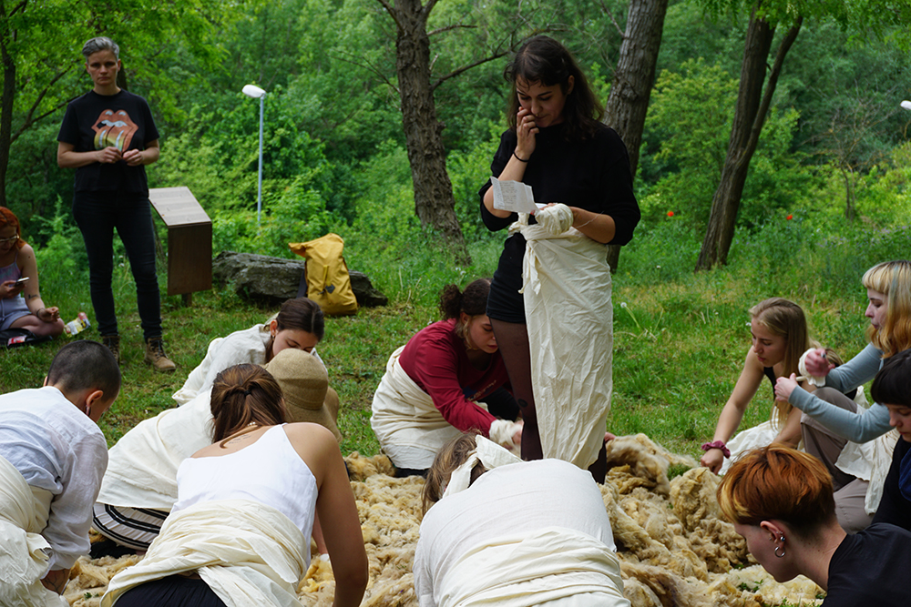
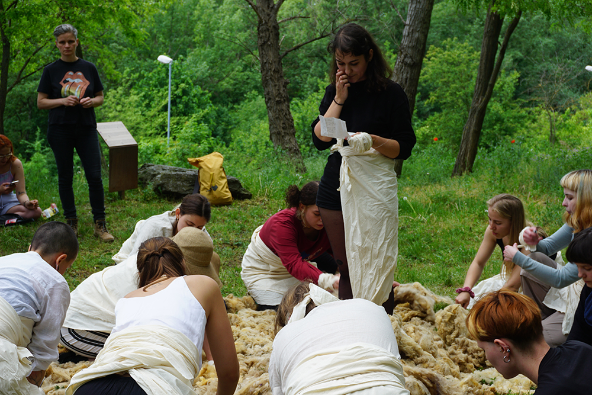

Performance
POHLED Z OKRAJE PASTINY (SYMPOZIUM) 2022
Performance byla součástí programu mezinárodního sympósia A view from the edge of a pasture, který organizovala Edith Jeřábkova a Denisa Langrová. Symposium je části jednoletého programu nazvaný A plant spadající pod Kunsthalle Bratislava, který organizuje Lydia Přibišová. Workshopy jsou součásti projektu Art Connected 2022 – 2023 iniciované společností tranzit.sk.
Tento projekt byl kolektivně iniciovaný Ateliérem Tělového Designu z Fakulty výtvarných umění v Brně. Performance byla založena na myšlence pohybu ovcí a pastýřů, kvůli obnově půdy a trávy. Plstění vlny do země jako akt, by mohl být metaforou pro spojení s pastvinou: potřeba zakořenit v době odpojení od přírody, kolonialismu, (zne)užívání zdrojů, potřeby odkazu, najít správné místo nebo kapitalistické potřeby produkování a opuštění bez zodpovědnosti.
Performance začala hledáním „správného“ místa a pokračovala zakořeněním vlny. Vlnu jsme si přinesly ve čtvercových kusech bavlněného oblečení, které po vyložení vlny byly využity jako zástěry. V hromadě vlny stála jedna osoba, přednášející její poezii a my jsme poezii hromadně jako sbor opakovali ve snaze vytvořit meditativní zpěv a přitom jsme plstili vlnu do půdy a přednášeli poezii ve smyčce.
Foto: Jamie Hrabců a archiv autora
{kind=link}
 

{kind=link}
Já Vs. Putin 2022
V rámci performance v Nové synagoze v Žilině jsem se rozhodl reflektovat situaci útoků Ruska na Ukrajinu, které proběhly v roce 2022. Proto jsem ve své performance tvořil portréty ruského prezidenta Vladimira Putina. Zároveň jsem chtěl znázornit sociální a politické nespravedlnosti, které jsou v ruské společnosti a politice přítomné. Specifické, charakterově nestejné/rozdílné portréty jsou znázorněny za pomocí barev, s kterými se tyto problémy mohou identifikovat. Těmi hlavními problémy, jež jsem zobrazoval, je útok Ruska na Ukrajinu, LGBT práva v Rusku, dezinformace, oligarchy, jež ovlivňují chod Ruska, styky s Čínou a jaderné zbraně. Portréty byly tvořeny pastelem na papír velikosti A3 a poté z nich byla složena holubička, která symbolizuje mír.
Foto: Karolina Raimund a archiv autora
{kind=link}
{kind=link}
{kind=link}
{kind=link}
{kind=link}

Klouby 2021
Performance proběhla v prostorách invalidovny, která má rozmanitou historii s ošetřováním invalidů. V důsledku toho, že spousta nemohoucích mohlo mít různé dysfunkce, se autor rozhodl v těchto prostorách prozkoumat sám, jaké to musí být fungovat s omezením. Proto si autor zafixoval klouby různými předměty, sádrovými obvazy a nachystal pro všechny hosty jednohubky.
Ovšem se ukázalo, že to je mnohem náročnější, než jak se může zdát. Nikdy předtím neměl autor na sobě sádru a sádrové obvazy používal poprvé. Proto už od samého začátku to byla výzva používat sádrové obvazy a pořádně si zafixovat části těla. Jak na to přišel, čekal jej další zádrhel a to s fixací rukou. První ruka šla ještě dobře, se druhou rukou mu pomohla sledující.
V průběhu celé performance si autor připadal jako dítě, jelikož se musel naučit dělat obyčejné věci s touto indispozicí a objevoval nové způsoby. Díky tomu mohl vyzkoušet jaké to asi je, žít s překážkami v životě a přizpůsobovat se daným věcem.
{kind=link}
{kind=link}
{kind=link}
{kind=link}
{kind=link}
{kind=link}
{kind=link}
{kind=link}
{kind=link}
Performance
A VIEW FROM THE EDGE OF A PASTURE (SYMPOSIUM) 2022
The performance was part of the program of the international multidisciplinary symposium entitled A VIEW FROM THE EDGE OF A PASTURE curated by Edith Jeřábková and Denisa Langrová. The symposium is part of the year-round program entitled A Plant by Kunsthalle Bratislava curated by Lydia Pribišová. The workshop and the lecture are part of the Art Connected 2022 - 2021 series intended by transit.sk
This piece has been done by a collective from the Studio of body design from the Faculty of fine arts in Brno. The performance was based on the concept of the constant moving of sheep and shepherds because of the need for new soil and grass. The act of felting the wool into the ground could be a metaphor for various connections to pasture: the need of rooting in the age of disconnection, colonialism, (mis)use of resources, our need to leave something behind, find a right place or capitalistic need to produce and then leave without responsibility.
The performance started as a search for „the right“ place to start, then it continues rooting with the use of wool. We carried the wool in a square piece of cotton clothing, later using it as an apron. In the pile of wool was a person standing, reciting her poem and we were repeating it as a choir in an attempt to create a meditative chant while felting the wool into the ground and repeating the poem in a loop.
Photo: Jamie Hrabců and author archive
Me Vs. Putin 2022
As part of my performance at the New Synagogue in Žilina, I decided to reflect on the situation of Russia's attacks on Ukraine, which occurred in 2022. Therefore, in my performance, I created portraits of Russian President Vladimir Putin. At the same time, I wanted to depict the social and political injustices that are present in Russian society and politics. The specific, characteristically different portraits are depicted using colors that can identify these problems. The main issues I depicted were Russia's attack on Ukraine, LGBT rights in Russia, disinformation, oligarchs that influence the running of Russia, relations with China, and nuclear weapons. The portraits were created using pastels on A3-sized paper, and then they were assembled into a dove, which symbolizes peace.
Photo: Karolina Raimund and author archive
Joints 2021
The performance took place on the premises of the disabled center, which has a varied history of caring for the disabled. As a result of the fact that a lot of disabled people could have various dysfunctions, I decided to explore for myself in these spaces what it must be like to function with some kind of limitation. That's why I fixed my joints with various objects, plaster bandages, and prepared canapés for all the guests.
However, it turned out to be much more difficult than it might seem. I had never worn a cast before in my life and it was the first time I had used plaster casts. So from the very beginning, it was a challenge to use plaster casts and fix yourself properly. As I figured it out, another snag awaited me, and that was fixing my hands. The first hand went well, the follower already helped me with the second hand.
During the entire performance, I felt like a child, as I had to learn to do ordinary things in this condition and discovered new ways. Thanks to this, I was able to experience what it's like, live with obstacles in life and adapt to the given things.